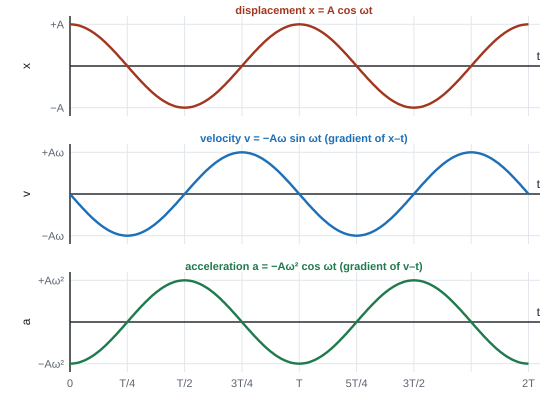
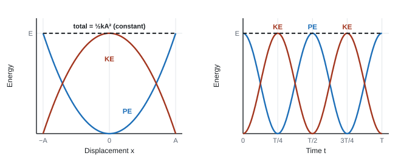
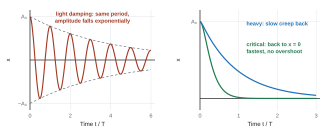
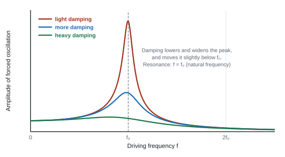

Oscillations
Pendulums, guitar strings, car suspensions, the atoms in a crystal and the swaying of a skyscraper all oscillate. Most of them follow the same simple rule, simple harmonic motion, and once you understand that one rule you can predict their periods, their speeds and their energies. Then we look at what happens when oscillations are damped, and when something pushes them at just the right frequency.
Spec143The condition for simple harmonic motion
Understand that SHM needs a restoring force F = −kx, and use this to decide when SHM will happen.
Definition
An object moves with simple harmonic motion (SHM) when its acceleration (or resultant force) is proportional to its displacement from the equilibrium position, and always acts in the opposite direction to the displacement (towards the equilibrium position).
The condition for simple harmonic motion
- x = displacement from the equilibrium position (m); k = a constant (for a spring, the stiffness, N m⁻¹).
- The minus sign means the force points the opposite way to the displacement: it is a restoring force.
- Since a = −(k/m)x and k/m is constant, comparing with a = −ω²x (144) gives ω² = k/m.
Spotting SHM
| System | Restoring force | SHM? |
|---|---|---|
| Mass on a spring (within the limit of proportionality) | Hooke's law: F = −kx | yes |
| Simple pendulum, small angles (under about 10°) | F ≈ −(mg/l)x | approximately |
| A ball bouncing on the floor | weight, constant while in the air (not ∝ x) | no |
| Pendulum swung through a large angle | not proportional to x | no |
| Liquid oscillating in a U-tube; a floating object bobbing | ∝ displacement | yes |
- The test is always: write the resultant force (or acceleration) in terms of x. If it is "−(constant) × x", the motion is SHM.
Restoring force and acceleration
A 0.40 kg mass on a spring (k = 25 N m⁻¹) is pulled 3.0 cm below its equilibrium position and released. Find the force and acceleration at release.
F = −kx = −25 × 0.030 = −0.75 N (magnitude 0.75 N, upwards, towards equilibrium)
a = F/m = −0.75/0.40 = −1.9 m s⁻² (1.9 m s⁻² upwards)
Two marks, asked in 15 of 18 papers:
- "(resultant) force / acceleration is proportional to the displacement (from the equilibrium position)";
- "and acts in the opposite direction to the displacement" (or "(always) towards the equilibrium position").
- "Equilibrium position" (or "undisplaced / fixed / central point or position") is needed: "reject 'equilibrium'" on its own (WPH15 Jun 2026); "do not accept mean position" (WPH15 Oct 2022). One paper rejected "towards the equilibrium position" and wanted "opposite to the displacement" (WPH15 Oct 2025): use that wording to be safe.
- "An equation with symbols defined correctly is a valid response for both marks", but every term must be defined and the minus sign explained (WPH15 Jun 2023).
Often asked as: state the condition for SHM; explain how an a–x graph shows SHM; decide which situation is SHM.
Writing "equilibrium" without "position". Saying "acceleration is proportional to displacement" and stopping (no direction). Writing a = −ω²x without saying what a, ω and x are or what the minus sign means. Repeating the learnt definition when the question says "explain how the graph shows SHM": refer to the graph (a straight line through the origin with a negative gradient).
Examined in past papers even though the spec doesn't list it.
- For an a–x graph question: "straight line through the origin" gives proportionality and "negative gradient" gives the opposite direction; the gradient is −ω² (WPH15 Jan 2025).
Spec144The SHM equations
Use a = −ω²x, x = A cos ωt, v = −Aω sin ωt, a = −Aω² cos ωt, T = 1/f = 2π/ω and ω = 2πf for a simple harmonic oscillator.
The equations
Defining equation of SHM
Displacement
Velocity
Acceleration
Period, frequency and ω
- A = amplitude (maximum displacement, m); ω = angular frequency (rad s⁻¹); f = frequency (Hz); T = period (s); t = time (s).
- x = A cos ωt assumes the timing starts at maximum displacement (released from x = A). If it starts at the equilibrium position moving in the +x direction, x = A sin ωt instead.
- v is the gradient of x–t, and a is the gradient of v–t (146, 147), which is why each line follows from the one before.
- Substituting x = A cos ωt into a = −Aω² cos ωt gives a = −ω²x, the SHM condition.
Maximum values
| Quantity | Maximum | Where |
|---|---|---|
| Speed | vmax = Aω (when sin ωt = ±1) | at the equilibrium position (x = 0) |
| Acceleration | amax = Aω² (when cos ωt = ±1) | at the extremes (x = ±A) |
- The period of SHM does not depend on the amplitude (it is isochronous).
Amplitude and maximum acceleration
A loudspeaker cone vibrates in SHM at 240 Hz with a maximum speed of 2.25 m s⁻¹.
ω = 2πf = 2π × 240 = 1508 rad s⁻¹
A = vmax/ω = 2.25/1508 = 1.49 × 10⁻³ m = 1.49 mm
amax = Aω² = 1.49 × 10⁻³ × 1508² = 3.39 × 10³ m s⁻²
Displacement and velocity at a given time
A mass oscillates with A = 4.0 cm and T = 0.80 s, released from x = +A at t = 0. Find x and v at t = 0.30 s.
ω = 2π/T = 2π/0.80 = 7.85 rad s⁻¹; ωt = 7.85 × 0.30 = 2.36 rad (calculator in radians)
x = A cos ωt = 4.0 × cos 2.36 = −2.8 cm (2.8 cm on the other side of equilibrium)
v = −Aω sin ωt = −0.040 × 7.85 × sin 2.36 = −0.22 m s⁻¹ (moving in the −x direction)
Convert first: frequency "per minute" to Hz, cm or mm to m. Use radians for ωt. For maxima you don't need t at all: vmax = Aω, amax = Aω².
- "Use of ω = 2π/T" (or 2πf) is its own mark; "use of v = Aω sin ωt with sin ωt = 1".
- Maximum KE: "use of Ek = ½mv2" with vmax = Aω; or Ek,max = ΔEel = ½kA² "because energy is conserved" (WPH15 Oct 2020).
Often asked as: amplitude or vmax from f; heart-beat rate per minute to Hz then amplitude; maximum KE from T and A; reading vmax from a graph; MCQs on vmax = 2πA/T and phase.
Calculator in degrees. Confusing f and T (or f and ω). Not seeing that maximum speed means sin ωt = 1. Giving an answer in m when mm was asked. Not squaring 2π when rearranging.
Examined in past papers even though the spec doesn't list it.
- Speed at any displacement: v = ±ω√(A² − x²), which comes from energy conservation (150). Useful when you know x but not t.
- Acceleration is in antiphase with displacement (half a cycle out); velocity is a quarter cycle out of phase with both (WPH15 Jan 2021).
Spec145Periods of a mass-spring system and a simple pendulum
Use T = 2π√(m/k) for a mass on a spring and T = 2π√(l/g) for a simple pendulum.
Mass on a spring
Mass–spring oscillator
A mass \(m\) on a spring of stiffness \(k\) feels a restoring force \(F = -kx\). Newton's second law, \(F = ma\), gives
\[ ma = -kx \quad\Rightarrow\quad a = -\frac{k}{m}\,x \]This has the form \(a = -\omega^2x\), so the motion is SHM with
\[ \omega^2 = \frac{k}{m} \quad\Rightarrow\quad \omega = \sqrt{\frac{k}{m}} \]Use \(T = 2\pi/\omega\):
\[ \boxed{T = 2\pi\sqrt{\frac{m}{k}}} \]A heavier mass has more inertia, so it oscillates more slowly. A stiffer spring pulls back harder, so it oscillates faster. The amplitude doesn't appear at all.
- m = oscillating mass (kg); k = spring constant (N m⁻¹). From ω² = k/m and T = 2π/ω.
- Heavier mass → longer period; stiffer spring → shorter period. T ∝ √m: four times the mass doubles T.
- The same T applies horizontally or vertically (gravity only shifts the equilibrium position).
- Find k from a static test: k = F/Δx = mg/Δx.
Simple pendulum (small angles)
Simple pendulum
A bob of mass \(m\) on a string of length \(l\) is pulled aside by an angle \(\theta\). The component of its weight along the arc pulls it back towards equilibrium:
\[ F = -mg\sin\theta \]For small angles (in radians), \(\sin\theta \approx \theta\). The bob's displacement along the arc is \(x = l\theta\), so \(\theta = x/l\):
\[ F \approx -mg\theta = -\frac{mg}{l}\,x \]At 10°, \(\sin\theta\) and \(\theta\) differ by only 0.5%, so this works well for swings of up to about 10°.
Divide by \(m\) to get the acceleration. The mass cancels:
\[ a = -\frac{g}{l}\,x \quad\Rightarrow\quad \omega^2 = \frac{g}{l} \]Use \(T = 2\pi/\omega\):
\[ \boxed{T = 2\pi\sqrt{\frac{l}{g}}} \]The period depends only on the length and on \(g\): not on the mass of the bob, and not on the amplitude while the swing stays small.
- l = length from the pivot to the centre of mass of the bob (m); g = 9.81 N kg⁻¹.
- T depends only on l and g: not on the mass of the bob and not on the amplitude (as long as the angle is small, under about 10°).
- For a pendulum, ω² = g/l.
Getting k or g from a straight-line graph
| Plot | Straight line because | Gradient gives |
|---|---|---|
| T² against m | T² = (4π²/k) m | k = 4π²/gradient |
| T² against l | T² = (4π²/g) l | g = 4π²/gradient |
| f² against 1/m | f² = (k/4π²)(1/m) | k = 4π² × gradient |
A seconds pendulum
Find the length of a pendulum with T = 2.000 s (g = 9.81 N kg⁻¹).
l = gT²/4π² = 9.81 × 2.000²/(4π²) = 0.994 m
It can't be used to define the metre exactly: g varies with location.
Extra mass on a spring
A 0.250 kg mass on a spring has T = 0.60 s. What mass must be added to make T = 0.75 s?
k = 4π²m/T² = 4π² × 0.250/0.60² = 27.4 N m⁻¹
New total mass m = kT²/4π² = 27.4 × 0.75²/(4π²) = 0.391 kg
Added mass = 0.391 − 0.250 = 0.14 kg
(Ratio shortcut: m₂ = m₁(T₂/T₁)² = 0.250 × (0.75/0.60)² = 0.391 kg.)
A 0.40 kg mass hangs on a spring with \(k = 60\ \text{N m}^{-1}\). It is pulled down 5.0 cm and released at \(t = 0\). Calculate (a) the period, (b) the maximum speed, (c) the maximum acceleration, and (d) the displacement and velocity at \(t = 0.10\ \text{s}\).
Show solution
(a) \(T = 2\pi\sqrt{m/k} = 2\pi\sqrt{0.40/60} = 0.513\ \text{s}\), and \(\omega = \sqrt{k/m} = \sqrt{150} = 12.2\ \text{rad s}^{-1}\).
(b) \(v_\text{max} = A\omega = 0.050 \times 12.25 = 0.61\ \text{m s}^{-1}\)
(c) \(a_\text{max} = A\omega^2 = 0.050 \times 150 = 7.5\ \text{m s}^{-2}\)
(d) \(\omega t = 12.25 \times 0.10 = 1.225\ \text{rad}\) (radians!), so
\[ x = A\cos\omega t = 0.050\cos(1.225) = 0.017\ \text{m} = 1.7\ \text{cm} \] \[ v = -A\omega\sin\omega t = -0.612 \times \sin(1.225) = -0.58\ \text{m s}^{-1} \]The minus sign means it is moving back towards (and about to pass through) the equilibrium position, which makes sense: 0.10 s is just under a quarter of a period.
A student times 20 oscillations of a pendulum of length 0.800 m and gets 35.9 s. Calculate a value for \(g\).
Show solution
\(T = 35.9 / 20 = 1.795\ \text{s}\). Squaring \(T = 2\pi\sqrt{l/g}\) and rearranging:
\[ g = \frac{4\pi^2 l}{T^2} = \frac{4\pi^2 \times 0.800}{1.795^2} = 9.80\ \text{N kg}^{-1} \]A better method is to use several lengths and plot \(T^2\) against \(l\): the gradient is \(4\pi^2/g\).
Substitute numbers first, then rearrange: most lost marks come from dropping the 2π or the square root while rearranging symbols. Time many oscillations (e.g. 20 or 30) and divide, rather than timing one.
- "Use of T = 2π√(m/k)" with the total oscillating mass; "allow use of ω² = k/m with T = 2π/ω".
- "Use of T = tmean/30" for repeated timing.
- Two springs side by side sharing the load: "factor of 2 applied to either m or k" (WPH15 Jun 2023).
- Pendulum period doesn't depend on mass: adding mass to the bob changes nothing (except through l) (WPH15 Jan 2025).
Often asked as: pendulum length for a given T; pendulum on another planet (find g from g = GM/r² first); k from a load test then f; mass added to change T; k from an f² against 1/m graph.
Stopping at the total mass when the question asks for the mass added. Forgetting the factor 2 for two springs. Using orbital equations when the question is about a pendulum on a planet (it scored zero). Rearranging before substituting.
Examined in past papers even though the spec doesn't list it.
- Springs in parallel share the load, so the effective k doubles; in series the effective k halves (WPH15 Jun 2023).
- The maximum load a spring can take is smaller when oscillating than at rest, because at the lowest point the spring force exceeds the weight (WPH15 Oct 2021).
Spec146Displacement-time graphs
Draw and interpret a displacement-time graph for an oscillating object, knowing that its gradient at any point gives the velocity.

Reading the x–t graph
- Amplitude A = the height of a peak above the equilibrium line.
- Period T = time for one complete cycle (peak to next peak). Read it over several cycles and divide, for accuracy. Then f = 1/T and ω = 2π/T.
- Gradient = velocity:
- at a peak or trough the gradient is zero: the object is momentarily at rest at the extreme;
- where the graph crosses the time axis the gradient is steepest: maximum speed, at the equilibrium position.
- To find v at a point, draw a tangent and find its gradient (use a large triangle).
Sketching
- Use a sine or cosine shape depending on where timing starts: x = A cos ωt from an extreme, x = A sin ωt from the equilibrium position, x = −A sin ωt if it starts at equilibrium moving in the −x direction.
- Keep the amplitude constant (if undamped) and the period the same as any other graph given. Put numbers on the time axis (e.g. T/2, T or the actual times).
Maximum speed from a displacement-time graph
An x–t graph shows A = 3.0 cm and three complete cycles in 1.20 s.
T = 1.20/3 = 0.40 s
vmax = Aω = 2πA/T = 2π × 0.030/0.40 = 0.47 m s⁻¹
Check: the tangent where the graph crosses the axis should have a gradient of about 0.47 m s⁻¹ (answers 0.45–0.55 m s⁻¹ were accepted from a tangent) (WPH15 Jun 2025).
- Sketch from a v–t graph: "same time period as velocity and constant amplitude"; "wave shifted a quarter cycle" (WPH15 Jun 2021).
- "Minus sine graph", "approximately the same period", amplitude approximately constant (WPH15 Oct 2025).
Often asked as: sketch x–t to match a given v–t or a–t graph; read A and T; vmax from the gradient at the axis crossing.
Leaving the time axis without values. Drawing the amplitude changing when there is no damping. Shifting by half a cycle instead of a quarter. Timing from one cycle only.
Spec147Velocity-time graphs
Draw and interpret a velocity-time graph for an oscillating object, knowing that its gradient at any point gives the acceleration.
Reading the v–t graph
- The v–t graph is the gradient of the x–t graph: for x = A cos ωt it is v = −Aω sin ωt, a quarter cycle out of phase with x. Its peaks are at ±Aω.
- Gradient = acceleration:
- where v crosses zero (object at an extreme) the v–t gradient is steepest: maximum acceleration, ±Aω²;
- at a peak of v (object at equilibrium) the gradient is zero: no acceleration, because there is no resultant force at x = 0.
- The area under a v–t graph from one extreme to the next gives the distance travelled, 2A.
- The a–t graph (gradient of v–t) is a = −Aω² cos ωt: the mirror image of the x–t graph.
Energy-time graphs

- KE = ½mv², so KE is always positive and peaks every time the object passes through equilibrium, which happens twice per cycle. Energy–time graphs have twice the frequency of the displacement.
- Kinetic energy against time: "positive", "frequency double that of the displacement", "maximum at t = 0 when the mass passes the equilibrium position" (WPH15 Oct 2020).
- Energy against displacement is a parabola (WPH15 Jan 2025).
Often asked as: MCQ on the a–t graph from the gradient of a v–t graph; sketch KE against time; sketch energy against displacement.
For energy against displacement, drawing a sine curve, a straight line, an upside-down parabola for PE, or negative energies. For KE against time, drawing it at the same frequency as x.
Spec148Resonance
Understand what resonance is.
The idea
- Every oscillating system has a natural frequency f₀: the frequency it oscillates at when displaced and left alone.
- When a periodic driving force acts at a frequency equal to the natural frequency, energy is transferred to the system most efficiently (each push comes at the same point in each cycle, in step with the motion). The amplitude builds up to a maximum.
Resonance: when the driving (forcing) frequency equals the natural frequency of the system, there is maximum transfer of energy to the system and the amplitude of oscillation is a maximum.
Examples
| Useful | Harmful (must be damped or avoided) |
|---|---|
| A child on a swing pushed once per swing | A bridge driven by people walking or by wind (the London Millennium Bridge) |
| Rocking a car stuck in mud, in time with its natural rocking | Buildings in an earthquake whose natural frequency matches the ground's shaking |
| Musical instruments: air columns and strings resonate | Car parts or panels rattling at a particular engine speed |
| Tuning a radio circuit to one station's frequency | A wine glass shattered by a sound at its natural frequency |
- Barton's pendulums: a heavy driver pendulum hangs from a string with several light pendulums of different lengths. The one with the same length as the driver (same natural frequency) swings with the largest amplitude.
- "The driving (forcing) frequency equals the natural frequency of [the system named]", "maximum transfer of energy" (accept "efficient transfer"), "resulting in maximum amplitude".
- Name both frequencies for the system in the question: "driving frequency of the hand equals the natural frequency of the mass-spring system" (WPH15 Jun 2023: very few did).
- Wine glass (6-mark) (WPH15 Jun 2022): striking gives a free oscillation that dies away (damping); a wet finger sliding round the rim drives / forces the glass; resonance when the driving frequency equals (is close to) the natural frequency; large amplitude, so loud sound.
- Bridge (6-mark) (WPH15 Jan 2025): people force the bridge to oscillate; "large amplitude of oscillation" (not "large swaying"); energy transferred from the bridge to the dampers.
Often asked as: define resonance in a context (tide in a bay, a hand driving a spring, an animal on a spring balance, a carriage on a bumpy road); decide whether a situation is resonance (microwave at 2.45 GHz against a natural frequency near 10 GHz: no); bridge and building design.
Calling every oscillation resonance: striking a glass is a free oscillation, not resonance. Saying "the frequencies match" without saying which frequencies, of what. Writing only "maximum amplitude" when the mark needs "maximum energy transfer". Assuming resonance is always bad.
Examined in past papers even though the spec doesn't list it.
- Resonance can still occur when the driver pushes at a sub-multiple of the natural frequency (every second or third cycle), because each push still comes at the same point in the cycle (WPH15 Jan 2021: insect wing muscles).
- Not every "frequency" heating is resonance: a microwave oven runs at 2.45 GHz, well away from the natural frequency quoted for water molecules (near 10 GHz), so the answer to "is this resonance?" was no (WPH15 Oct 2020). Check the numbers before saying resonance.
- At resonance the energy supplied per cycle equals the energy lost to damping per cycle, so the amplitude stops growing (WPH15 Jun 2023).
Spec149Core practical 16: unknown mass from resonant frequencies
Find an unknown mass by measuring the resonant frequencies of a spring loaded with known masses.
Principle
- A mass m on a spring has natural (resonant) frequency f = 1/T = (1/2π)√(k/m), so
Resonant frequency and mass
- Measure f for several known masses, plot a calibration graph (f² against 1/m, or T² against m), then measure f for the unknown mass and read its mass off the graph.
Core practical 16: method
- Hang a spring from a clamp. Attach its bottom end to a known mass, and connect a vibration generator driven by a signal generator to the top of the spring (or below the mass).
- Slowly increase the frequency from low values and watch the amplitude. Find the frequency at which the amplitude is largest: the resonant frequency. Approach it from above and below and average; use the signal generator's display or an oscilloscope to read f.
- Repeat for 5–6 known masses (e.g. 100 g to 600 g).
- Plot f² (y) against 1/m (x): a straight line through the origin with gradient k/4π².
- Hang the unknown mass, find its resonant frequency, and read 1/m from the graph (or calculate m = gradient/f²).
Alternative: displace each mass and let it oscillate freely. The natural frequency equals the resonant frequency, so timing 20 oscillations (T = t/20, f = 1/T) gives the same data. Plot T² against m.
Variables: independent = mass; dependent = resonant frequency (or period); control = same spring, small amplitude, same clamp.
Safety: clamp the stand to the bench (or weight the base); wear eye protection in case the spring snaps; keep feet clear of falling masses.
Reading the unknown mass
A T²–m graph for a spring is a straight line through the origin with gradient 1.97 s² kg⁻¹. The unknown mass oscillates with T = 0.85 s.
k = 4π²/gradient = 39.5/1.97 = 20 N m⁻¹
m = T²/gradient = 0.85²/1.97 = 0.37 kg
A student's graph of \(T^2\) against \(m\) has a gradient of 1.58 s² kg⁻¹. An unknown mass on the same spring resonates at 1.40 Hz. Calculate (a) the spring constant and (b) the unknown mass.
Show solution
(a) The gradient is \(4\pi^2/k\), so
\[ k = \frac{4\pi^2}{1.58} = 25.0\ \text{N m}^{-1} \](b) \(T = 1/f = 1/1.40 = 0.714\ \text{s}\), so \(T^2 = 0.510\ \text{s}^2\) and
\[ m = \frac{T^2}{\text{gradient}} = \frac{0.510}{1.58} = 0.32\ \text{kg} \]Errors and improvements
- Resonance peaks are hard to judge by eye: find the frequency range where the amplitude is largest, take its midpoint, and repeat.
- The spring's own mass adds to the oscillating mass, so a T²–m line may not pass exactly through the origin. That doesn't stop the method working, because the unknown is read off the same line.
- Keep amplitudes small so the spring obeys Hooke's law.
- For timing: start and stop at the equilibrium position (fastest point, using a fiducial marker); time many oscillations.
- "Combine T = 2π√(m/k) with f = 1/T to obtain f² = (k/4π²)m⁻¹", "compare with y = mx + c", "large triangle used", "conclusion consistent with the earlier value" (WPH15 Jun 2021).
- "Use of T = t/30" when 30 oscillations were timed (WPH15 Jun 2023).
Often asked as: the procedure itself hasn't been asked yet; the f² against 1/m analysis and repeated timing have. A data logger's advantage: many readings over very short or very long times (WPH15 Jun 2021).
Reading T from a single oscillation. Plotting f against m and expecting a straight line. Forgetting that the gradient of f² against 1/m is k/4π², not k.
Spec150Energy in undamped and damped oscillations
Apply conservation of energy to undamped and damped oscillating systems.
Undamped: energy swaps between KE and PE
- With no energy losses, the total energy is constant. At the extremes it is all potential (elastic PE for a spring, gravitational PE for a pendulum); at the equilibrium position it is all kinetic.
- For a mass on a spring (taking PE = 0 at equilibrium):
Total energy of a mass on a spring
Energy at displacement x
The elastic potential energy stored in a spring is \(\tfrac{1}{2}F\Delta x\). With \(F = kx\), at displacement \(x\) it stores
\[ E_\text{p} = \tfrac{1}{2}kx^2 \]At the end of the swing, \(x = A\) and the mass is at rest, so all the energy is potential:
\[ \boxed{E_\text{total} = \tfrac{1}{2}kA^2} \]Check at equilibrium, where all of it is kinetic. Using \(v_\text{max} = A\omega\) and \(\omega^2 = k/m\):
\[ \tfrac{1}{2}mv_\text{max}^2 = \tfrac{1}{2}mA^2\omega^2 = \tfrac{1}{2}mA^2\frac{k}{m} = \tfrac{1}{2}kA^2 \]The two agree, as energy conservation says they must. The energy is proportional to \(A^2\): double the amplitude and the oscillator holds four times as much energy.
- Energy ∝ amplitude². Double the amplitude and the energy goes up four times; halve the energy and the amplitude falls to 1/√2 (71%).
Speed from energy
A 0.20 kg mass on a spring (k = 50 N m⁻¹) oscillates with amplitude 4.0 cm. Find the total energy, vmax, and the speed at x = 2.0 cm.
E = ½kA² = ½ × 50 × 0.040² = 0.040 J
vmax = √(2E/m) = √(2 × 0.040/0.20) = 0.63 m s⁻¹ (check: ω = √(k/m) = 15.8 rad s⁻¹, Aω = 0.63 m s⁻¹)
At x = 0.020 m: PE = ½ × 50 × 0.020² = 0.010 J, so KE = 0.040 − 0.010 = 0.030 J
v = √(2 × 0.030/0.20) = 0.55 m s⁻¹
For the 0.40 kg mass on the 60 N m⁻¹ spring with amplitude 5.0 cm, find (a) the total energy and (b) the speed of the mass when its displacement is 3.0 cm.
Show solution
(a) \(E = \tfrac{1}{2}kA^2 = 0.5 \times 60 \times 0.050^2 = 0.075\ \text{J}\)
(b) At \(x = 0.030\ \text{m}\): \(E_\text{p} = 0.5 \times 60 \times 0.030^2 = 0.027\ \text{J}\), so \(E_\text{k} = 0.075 - 0.027 = 0.048\ \text{J}\).
\[ v = \sqrt{\frac{2E_\text{k}}{m}} = \sqrt{\frac{2 \times 0.048}{0.40}} = 0.49\ \text{m s}^{-1} \]Damped: energy leaves the system
- Damping: resistive forces (air resistance, friction, a liquid's drag) act on the oscillator. Work is done against them, so energy is transferred out of the oscillating system to the surroundings (their thermal energy store rises).
- The total energy falls, so the amplitude falls with time. With light damping the period stays almost the same.
- The damping force always acts opposite to the velocity (it is not the restoring force, which acts opposite to the displacement).

| Degree of damping | Behaviour | Example |
|---|---|---|
| Light | oscillates, amplitude decays gradually | a pendulum in air |
| Critical | returns to equilibrium in the shortest time, no oscillation | car suspension, a measuring needle |
| Heavy | returns very slowly, no oscillation | a door closer |
- Damping: "energy is transferred (dissipated) to the surroundings" (or "the thermal energy store of the dampers increases") "because work is done against resistive forces" (WPH15 Jun 2024, Jun 2025, Jun 2026). Only "MAX 1 for reference to damping" without the work-done idea (WPH15 Oct 2023).
- "Work is done (by the roller) as oil is forced through the holes" (damper in a building) (WPH15 Jun 2024).
- Undamped: "elastic PE converted to KE at the equilibrium position, total energy constant".
Often asked as: maximum KE from elastic PE; draw a horizontal total-energy line on an energy–displacement graph and read off energies; why a mass oscillating in water stops; MCQs on amplitude ∝ √E and on the direction of the damping force.
Explaining damping without "work done against resistive forces". Confusing the damping force with the resultant (restoring) force. Saying KE is constant, or zero at equilibrium.
Examined in past papers even though the spec doesn't list it.
- Total energy = ½kA², the area under the force–extension graph up to the amplitude (WPH15 Oct 2020, Jan 2023).
- The damping force is always opposite to the velocity (WPH15 Oct 2023, Oct 2025 MCQs).
Spec151Free and forced oscillations
Distinguish free oscillations from forced oscillations.
The difference
| Free oscillation | Forced oscillation | |
|---|---|---|
| How it starts | displaced once (or struck), then left alone | a periodic external (driving) force keeps acting |
| Frequency | the system's natural frequency f₀ | the driving frequency (once it has settled) |
| Energy | no energy supplied after the start; with damping, the amplitude dies away | energy is supplied by the driver each cycle, replacing the energy lost to damping |
| Examples | a plucked guitar string; a struck tuning fork; a pendulum pulled aside and released | a swing pushed every cycle; a car body vibrating as it drives over a bumpy road; the cone of a loudspeaker |
- A forced oscillator first goes through a short messy stage, then settles to a steady amplitude at the driving frequency. How big that amplitude is depends on how close the driving frequency is to f₀ (spec point 152).
- Free: oscillates "at its natural frequency" after "a single displacement", with no external periodic force.
- Forced: "an external periodic force" makes it oscillate "at the driving frequency".
- Pushing a swing each time it reaches maximum height is a forced oscillation (WPH15 Oct 2025).
Often asked as: classify situations (MCQ); the striking/rubbing wine-glass 6-mark question (WPH15 Jun 2022).
Describing both the struck glass and the rubbed glass as resonance: striking is free; rubbing is forced (and can produce resonance). Defining "forced" as "not free" without mentioning the external periodic force or the energy it supplies.
Spec152Forced oscillations near the natural frequency; damping and resonance
Understand how the amplitude of a forced oscillation varies with driving frequency, especially at and near the natural frequency, and know qualitatively how damping changes resonance.
The resonance curve

- Low driving frequency: the system just follows the driver; amplitude ≈ the driver's own amplitude (the static displacement).
- As f approaches f₀: amplitude rises sharply; maximum at resonance (f ≈ f₀).
- Above f₀: amplitude falls, towards zero at very high frequency (the system can't keep up).
Effect of damping
- More damping means more energy is removed each cycle, at every frequency, so:
- the peak amplitude is lower;
- the peak is broader (flatter, less sharp), so the system responds over a wider range of frequencies;
- the peak moves slightly below f₀.
- Heavy damping can remove the peak almost entirely.
- Damping doesn't change the natural frequency itself (very little, for light damping).
Why it matters
- Buildings in earthquake zones and long bridges are fitted with dampers (oil-filled pistons, tuned mass dampers, rubber bearings) so that if they are driven near their natural frequency the amplitude stays small. The damper is designed so that energy is transferred efficiently into the damper, where work done against resistive forces dissipates it.
- Where a sharp resonance is wanted (radio tuning, musical instruments), damping is kept small.
A tall building in an earthquake zone has a natural frequency of 0.8 Hz. Explain why it could be badly damaged by an earthquake with ground vibrations of about 0.8 Hz, and why engineers fit dampers.
Show solution
The ground shaking is a periodic driving force, so the building performs forced oscillations. When the driving frequency (0.8 Hz) equals the building's natural frequency, resonance occurs: energy is transferred to the building most efficiently, so the amplitude of its sway becomes very large and can exceed what the structure can withstand.
Dampers dissipate energy from the oscillations (for example by plastic deformation of ductile metal, or by friction in fluid dampers). This makes the resonance peak much lower, so the maximum amplitude is smaller, and it makes the oscillations die away quickly once the shaking stops.
- "Damping reduces the amplitude (of the peak)" and "the peak is flatter / broader"; energy is removed "at all frequencies" (WPH15 Jun 2021).
- Damper design: "maximum energy transfer to the damper" (from the building) (WPH15 Jun 2024).
Often asked as: MCQs on where damping acts; designing dampers for a building or carriage; describe how amplitude changes as the driving frequency is increased. A sketch of the curves hasn't been asked in recent papers, but learn it.
Saying damping changes the natural frequency a lot, or moves the peak to a higher frequency. Drawing heavier-damping curves with taller peaks. Designing a building damper to "avoid resonance" when the question wants energy transferred into the damper.
Spec153Damping by plastic deformation of ductile materials
Understand how damping and the plastic deformation of ductile materials reduce the amplitude of oscillations.
Ductile materials
- A ductile material can undergo large plastic deformation (it can be drawn into wires) before it breaks. Examples: copper, mild steel, gold.
- Plastic deformation is permanent: the material doesn't return to its original shape when the force is removed.
How they damp oscillations
- When a ductile component (e.g. a steel brace or damper in a building) is deformed plastically, work is done to rearrange its structure permanently. The energy goes into its internal energy (it warms up) and is not returned to the oscillation as kinetic or elastic energy.
- So energy is removed from the oscillating system and the amplitude falls.
- An elastic material, by contrast, stores the energy as elastic PE and gives most of it back, so it doesn't damp much.
- Any damping (air resistance, viscous oil dampers, rubber bearings) works the same way: work done against resistive forces removes energy from the oscillation.
Earthquake engineering
- Buildings use ductile steel frames and connections, which bend permanently and absorb energy in a severe earthquake rather than snapping (as a brittle material such as unreinforced concrete or cast iron would).
- Other dampers: oil-filled hydraulic dampers, rubber base isolators, tuned mass dampers at the top of tall buildings.
- Related energy-absorbing ideas: car crumple zones, climbing ropes that stretch and absorb the energy of a fall.
- "Ductile materials deform plastically", so "energy is dissipated / work is done" in permanent deformation. A ductile material is one that shows "large plastic deformation before it breaks"; it is not "stiff" or "elastic" (WPH15 Jun 2023, Jan 2026).
- Steel is ductile (WPH15 Oct 2024).
Often asked as: MCQs only so far (which describes a ductile material; why ductile materials reduce amplitude), set in the context of buildings in earthquake zones.
Confusing ductile with brittle, or with elastic. Saying the energy is "lost" without saying it is transferred out of the oscillating system (to internal energy of the material and the surroundings).
Quick checks
Which equation describes an object moving with simple harmonic motion?
The acceleration must be proportional to the displacement (\(x\), not \(x^2\)) and opposite to it, hence the minus sign. \(a = -g\) is a constant acceleration, like a bouncing ball in the air, which is not SHM.
An object in SHM passes through its equilibrium position. Which statement is correct?
At \(x = 0\), \(a = -\omega^2 x = 0\): there is no restoring force there. All of the energy is kinetic, so the speed is at its greatest, \(A\omega\).
A pendulum clock is taken to the Moon, where \(g\) is one sixth of its value on Earth. By what factor does the period change?
\(T = 2\pi\sqrt{l/g}\), so \(T \propto 1/\sqrt{g}\). Dividing \(g\) by 6 multiplies \(T\) by \(\sqrt{6} = 2.45\). The period doesn't depend on the bob's mass, but it does depend on \(g\).
The amplitude of a mass–spring oscillator is doubled. What happens to its period and to its total energy?
\(T = 2\pi\sqrt{m/k}\) has no \(A\) in it. The total energy is \(\tfrac{1}{2}kA^2\), so doubling \(A\) multiplies it by 4.
The damping of a driven oscillator is increased. How does its resonance curve (amplitude against driving frequency) change?
More damping dissipates more energy per cycle, so the amplitude at resonance is smaller and the response is spread over a wider range of frequencies. The peak also moves slightly below the natural frequency, not above it.
A mass on a spring has a period of 0.50 s. The mass is replaced by one four times as heavy. What is the new period?
\(T \propto \sqrt{m}\), so four times the mass gives \(\sqrt{4} = 2\) times the period: 1.0 s.